Introducción
Hola a todos. Yo soy Daniel y soy estudiante de la primera promoción del grado en Ciencia e Ingeniería de Datos en mi universidad, y este es el primer artículo de una serie en la que mi intención es explicar brevemente en qué consisten los cuatro cursos que componen esta titulación.
Mi motivación es que antes de decidirme por esta carrera, yo estaba pensando en matricularme en Ingeniería Informática del Software hasta que tuve un cambio de opinión en el último momento. De esta carrera hay por internet un montón de testimonios de alumnos contando un poco en qué consiste y cómo fue su experiencia. Sin embargo, dado que el nuevo grado de Datos aún es bastante reciente en España y todavía no hay muchas universidades que la oferten, la información disponible sobre ella es bastante escasa.
Además, en nuestro caso la metodología fue bastante innovadora pues el grado es semipresencial, es decir, que sólo íbamos unas pocas horas por la tarde a clase, dando la mitad del contenido de forma online en forma de vídeos. A todo esto hay que sumarle la oportunidad de realizar prácticas en empresa desde el primer año.
El plan de estudios del grado se muestra en la Figura 1. En este artículo vamos a comentar las asignaturas del primer curso. En este año no empezamos con la ciencia de datos propiamente dicha, por lo que muchas de las asignaturas son comunes con Informática.
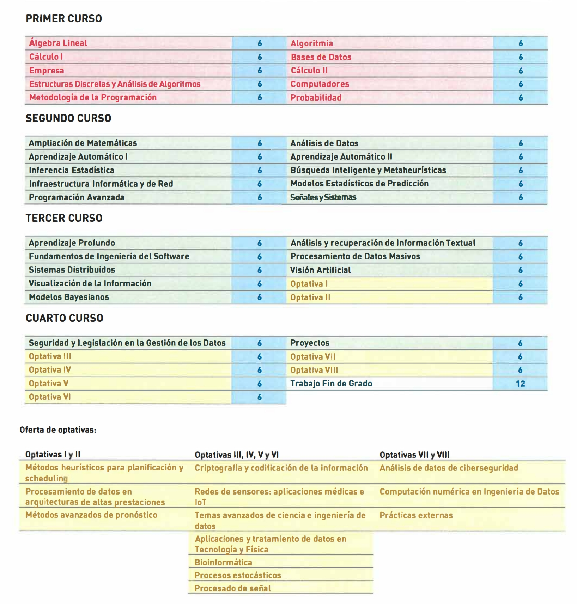
La dinámica va a ser la siguiente. Voy a ir asignatura por asignatura comentando un poco qué contenidos se imparten, cómo fué mi experiencia personal, y aprovechar para desahogarme un poco. Obviamente, el temario no va a ser el mismo en todas las universidades, ni va estar estructurado de la misma manera, pero igualmente creo que esta guía os puede resultar de ayuda pues a fin de cuentas los conceptos básicos van a ser los mismos.
También, aunque he intentado simplificar las cosas lo máximo posible, para que sean inteligibles para estudiantes que acaban de terminar bachillerato, es probable que no entendáis muchas cosas de las que hable. Tampoco os compliquéis mucho la vida intentando entenderlo todo pues simplemente es para que veáis de qué van las asignaturas.
Primer semestre
Todas las asignaturas de este grado son semestrales, por lo que duran alrededor de cuatro meses y luego hay una convocatoria de exámenes. Empezamos con las asignaturas del primer semestre:
Álgebra Lineal
Como no podría faltar en un grado de ingeniería, comenzamos con la asignatura de Álgebra Lineal. Sin embargo, nuestro temario fue bastante peculiar pues decidieron hibridarla con Métodos Numéricos. A continuación, se muestra una comparativa entre los temarios de esta asignatura entre el grado de Informática y del de Datos:
Ingeniería Informática:
Conjuntos numéricos (números complejos)- Matrices y sistemas de ecuaciones lineales
- Espacios vectoriales
- Aplicaciones lineales
Espacio euclídeo- Diagonalización
Ciencia e Ing. de Datos:
- Matrices
- Sistemas de ecuaciones lineales y métodos numéricos para resolverlos
- Espacios vectoriales y aplicaciones lineales
- Diagonalización
- Sistemas dinámicos lineales discretos
- Métodos numéricos de diagonalización
Como se observa, además de la separación y recombinación de varios temas, se ha prescindido de los contenidos relativos a números complejos1 y geometría euclíeda, y se ha ampliado el tema de sistemas de ecuaciones lineales con contenidos de Métodos Numéricos, además de añadir dos unidades al final exclusivas para nuestro grado.
1 Por algún motivo los que diseñaron este grado pensaron que los data scientists no necesitamos los números complejos para nada. Sin embargo asignaturas en cursos posteriores han demostrado que sí.
Veamos un poco por encima los contenidos que se imparten:
- Los dos primeros temas son básicamente un repaso de matrices y de su uso para resolver sistemas de ecuaciones lineales que se suele ver en bachillerato. Sin embargo, se añaden nuevos conceptos como la factorización \(LU\) de matrices y la resolución numérica de sistemas de ecuaciones con los métodos de Jacobi y Gauss-Seidel. Estos son métodos iterativos (que se van repitiendo) y que en cada paso van poco a poco aproximando las soluciones de los sistemas.
- A partir de aquí los contenidos empiezan a ser completamente nuevos. El Tema 3 empieza con espacios vectoriales, pero no en el sentido que sentido que se estudia en secundaria (donde los vectores son simplemente flechas con una determinada longitud y orientación), sino que damos la definición matemática rigurosa de vectores y espacios vectoriales. Por ejemplo, no sólo son vectores cosas del estilo \(\vec{x} = (1, 2, 3)\), también las matrices, como \(\vec{x} = \begin{pmatrix} 1 & 2 \\ 3 & 4 \end{pmatrix}\), y los polinomios, como, \(\vec{x} = 1 + 2x + x^2\), pueden ser vectores. Algunos conceptos que se estudian son los subespacios vectoriales, el vector nulo, sistemas generadores, base de un espacio vectorial, base canónica, dimensión de un espacio vectorial, coordenadas de un vector respecto a una base vectorial, matriz para pasar las coordenadas de una base a otra, etc.
- El Tema 3 continua con aplicaciones lineales entre espacios vectoriales. Básicamente son funciones que reciben vectores y te devuelven vectores, como \(f(x, y) = (2x + y, x + 3y)\), que deben cumplir que \(f(\alpha\vec{x} + \beta\vec{y}) = \alpha f(\vec{x}) + \beta f(\vec{y})\), lo que permite expresarlas como un producto matricial en su lugar, es decir: \[ f(x, y) = (2x + y, x + 3y) = \underbrace{\begin{pmatrix} 2 & 1 \\ 1 & 3 \end{pmatrix}}_{\text{Matriz de paso}} \begin{pmatrix} x \\ y \end{pmatrix} \] Se estudian conceptos como expresar cómo cambia esta matriz de paso cuando cambian las bases en las que se expresan los vectores, núcleo e imagen de aplicaciones lineales, aplicaciones inyectivas, suprayectivas, etc.
- El siguiente tema es el más importante de la asignatura, trata sobre diagonalización de endomorfismos o descomposición en valores y vectores propios. Un endomorfismo es un tipo de aplicación lineal donde el vector de entrada y el vector de salida pertenecen al mismo espacio. La intención es buscar una base especial que hace que la matriz de paso sea diagonal y que se cumplan un montón de propiedades que tienen innumerables aplicaciones prácticas (como el reconocimiento facial o el algoritmo de búsqueda de Google) y que va a estar apareciendo constantemente en muchas asignaturas de la carrera. A continuación se muestra un ejemplo de diagonalización de una matriz de paso (\(P\) es la matriz con los vectores propios y \(D\) es la matriz diagonal con los valores propios): \[ A = \begin{pmatrix} 4 & 1 \\ 2 & 3 \end{pmatrix} = PDP^{-1} = \begin{pmatrix} 1 & 1 \\ 1 & -1 \end{pmatrix} \begin{pmatrix} 5 & 0 \\ 0 & 2 \end{pmatrix} \begin{pmatrix} 1 & 1 \\ 1 & -1 \end{pmatrix}^{-1} \]
- Comenzamos con los temas exclusivos de nuestro grado. El primero de ellos se basa en la resolución de sistemas dinámicos lineales discretos. Son básicamente sistemas de ecuaciones recurrentes, un tipo de ecuaciones en los que la solución en un instante \(n\) depende de la solución en instantes anteriores, como la sucesión de Fibonacci: \[\begin{cases} x_n = x_{n-1} + x_{n-2} \\ x_0 = 0, x_1 = 1 \end{cases}\] Estos sistema se resuelven con diagonalización y un ejemplo sería: \[ \begin{cases} x_n = 0.5x_{n-1} + 0.6y_{n-1} + 0.4z_{n-1} \\ y_n = 0.25x_{n-1} + 0.3y_{n-1} + 0.3z_{n-1} \\ z_n = 0.25x_{n-1} + 0.1y_{n-1} + 0.3z_{n-1} \end{cases} \]
- Como dije, la parte de diagonalización es la más importante. Por tanto, tuvimos un último tema de métodos numéricos de diagonalización para obtener soluciones aproximadas cuando el cálculo de valores y vectores propios cuando su cálculo se complica.
También, en la parte práctica de la asignatura vimos una pequeña introducción al programa de cálculo matricial MatLab, donde realizábamos ejercicios asistidos por ordenador e implementábamos algunos de los algoritmos de cálculo numérico que vimos en la asignatura.
La asignatura no es especialmente complicada. Sí que es cierto que en la universidad hacen que parezca más difícil de lo que realmente es usando toda la jerga matemática. Sin embargo, con ayuda de una academia acabas viendo que los conceptos son bastante intuitivos. Además, la clave es llevar bien el tema de espacios vectoriales porque sin él no puedes seguir avanzando en la asignatura.
Sí que es es cierto que los exámenes de teoría me resultaron un poco complicados porque, aunque los conceptos no eran difíciles, había que hacer un montón de operaciones, que es mi punto débil. Sin embargo, entre los cuestionarios, la prácticas de aula, y la parte de laboratorio que se me daba bastante bien, acabé con un notable de nota final.
Estructuras Discretas y Análisis de Algoritmos
Al igual que en el grado de Informática, hemos tenido una asignatura de Matemática Discreta. Esta es una rama de las matemáticas que se encarga del estudio de conjuntos discretos. Para hacernos una sencilla idea de lo que es un conjunto discreto, pensemos en los números naturales \(\mathbb{N}\). Se dice que es un conjunto discreto porque, por ejemplo, entre los números \(1\) y \(2\) “no hay nada entre ellos”. Sin embargo, números reales \(\mathbb{R}\) no forman un conjunto discreto porque en este caso entre los números \(1\) y \(2\) hay infinitos números (\(1.1\), \(1.11\), \(\sqrt{2}\), etc.).
Importante
La distinción entre un conjunto discreto y un conjunto continuo es un concepto fundamental y sumamente importante en esta carrera. Mismamente en estadística, Inteligencia Artificial y optimización hay una clara distinción entre las técnicas que son para variable discreta (por ejemplo, el número que sale al lanzar un dado) y las que son para variable continua (por ejemplo, la estatura de una persona).
La asignatura comienza llevándonos a las bases de las matemáticas estudiando la teoría de conjuntos (producto cartesiano, subconjuntos, etc.) y relaciones entre elementos de conjuntos (relaciones de equivalencia, de orden, etc.).
\[ C = \{ a, b, c \} \] \[ R = \{ (a, b), (a, c) \} \]
A continuación, se procede a estudiar en profundidad teoría de grafos. Un grafo es básicamente una estructura de datos compuesta por un conjunto de nodos que están conectados entre sí por arcos. Un ejemplo se puede ver en la Figura 2. Esto resulta muy útil como data scientists a la hora de modelar información. Algunos conceptos que se imparten son la búsqueda de caminos óptimos entre nodos por medio del algoritmo de Dijkstra, analizar la accesibilidad y la conectividad entre los nodos de un grafo, facilitar la resolución de ejercicios de conjuntos y relaciones con teoría de grafos, buscar emparejamientos y recubrimientos entre nodos, búsqueda de caminos eulerianos y hamiltonianos, árboles (un tipo particular de grafo). También, se han visto problemas relacionados con la toería de grafos como el del cartero chino, coloreado de grafos2, representación plana de un grafo y problemas de redes y flujos, entre otros.
2 Como curiosidad, acudí al examen con una caja de ceras de colores.
La segunda parte de la asignatura consistía básicamente en combinatoria orientada al análisis del rendimiento de algoritmos. Para ello, se han estudiado conceptos como conteo, variaciones, permutaciones, combinaciones, números combinatorios, etc. A continuación, se tendría que haber dado recurrencias y análisis asintótico de algoritmos, pero no dió tiempo.
Esta asignatura al principio daba bastante miedo pues tiene mucho lenguaje matemático. Sin embargo, al final, con ayuda de una academia eso sí, se acaba viendo que los conceptos que hay detrás de tanto símbolo son bastante intuitivos y la asignatura no supone mayor dificultad, por lo que acabé aprobándola con un notable.
También, como aún no habíamos dado mucho de programación, las prácticas de laboratorio estuvieron destinadas a la resolución colaborativa de ejercicios.
En el grado de Informática la asignatura homóloga recibe el nombre de Autómatas y Matemáticas Discretas, que se centra menos en la teoría de grafos pues su objetivo es el estudio de la teoría de autómatas.
Metodología de la Programación
Esta asignatura es una introducción al arte de programar un ordenador. Asumo que quien está leyendo este artículo por lo menos ha oído hablar de lo que es un lenguaje de programación. Sin embargo, dado que en bachillerato estos conceptos no son obligatorios para acceder a la universidad (como mucho se puede dar en alguna asignatura optativa de TIC), recomiendo al lector que antes de considerar esta carrera investigue un poco qué es esto de programar, ya que es un campo que suele resultar muy extraño y abstracto a quien acaba de empezar.
Para ayudar al lector a hacerse una idea de lo que es un lenguaje de programación, le he pedido a ChatGPT que me de una explicación sencilla para alguien que no tiene no sabe nada de ello:
Imagina que un ordenador es como un robot muy obediente, pero que no sabe hacer nada por sí mismo. Para que el robot haga algo, como encender una luz, escribir un mensaje, o resolver un problema, necesitamos darle instrucciones muy claras, paso por paso.
Programar un ordenador es justamente eso: escribir una serie de instrucciones, en un lenguaje que el ordenador puede entender, para que haga lo que tú quieras. Estas instrucciones se llaman código o programa.
Piensa en ello como una receta de cocina. Si sigues una receta, te dirá exactamente qué ingredientes necesitas y qué pasos seguir para preparar un plato. De la misma manera, cuando programas, escribes una “receta” para que el ordenador sepa qué tiene que hacer.
Por ejemplo, si quieres que el ordenador muestre un mensaje en la pantalla, le das una instrucción específica para que lo haga, como si le dijeras “Escribe esta palabra aquí”. Todo lo que hace un ordenador, desde jugar a un videojuego hasta realizar cálculos complejos, es el resultado de seguir las instrucciones que alguien programó.
En resumen, programar es decirle a un ordenador lo que tiene que hacer, paso a paso, usando un lenguaje que puede entender.
El lenguaje de programación seleccionado para esta asignatura es Python, el lenguaje por excelencia para la Ciencia de Datos y la Inteligencia Artificial, usando como entorno de desarrollo Visual Studio Code. La asignatura empieza de cero, y se da lo básico en programación: imprimir y leer datos por línea de comandos, variables, listas, condicionales, bucles, funciones y cuatro pinceladas de programación orientada a objetos. También vimos una pequeña introducción al paquete de cálculo matricial numpy.
En mi caso no tuve mayor problema con esta asignatura pues ya estudié programación de forma autodidacta. Sin embargo, para muchos fue su primer contacto con la programación, y dejó claro los dos perfiles de alumno que cursan esta carrera: los que les gusta la informática y los que les gustan las matemáticas/estadística. En nuestro caso, la mayor parte la clase estaba formada por gente que le interesaba más la parte matemática, habiendo muchos casos de gente que iba a entrar en carreras cono Matemáticas puras, Física, Estadística, Económicas, entre otras, y que, o bien no entraron, o cambiaron de opinión a última hora y se matricularon en esta carrera pensando que todo iba a ser con “boli y calculadora”. Es por esto por lo que a mucha gente se le atragantó mucho esta asignatura. De todas formas no hace falta que le tengáis miedo a la programación porque a medida que se avanza en la carrera poco a poco la gente acaba acostumbrándose y es algo que cambia completamente vuestra forma de pensar.
Sí que es cierto que nuestra situación fue un poco más complicada que en Informática pues sólo teníamos una asignatura de programación el primer semestre en vez de dos, y Python no es precisamente el mejor lenguaje a la hora de tener un primer contacto con este arte. Además, la forma en la que se enseña la programación en la universidad habitualmente suele dejar bastante que desear. Y por si alguien se lo está preguntando, nos tocó programar en papel.
A continuación tenéis para que veáis uno de los programas que desarrollamos en clase. Este precisamente le pide al usuario que introduzca un código ISBN y comprueba si este es válido:
def es_isbn(n: int) -> bool:
cadena: str = str(n)
print(len(cadena))
if len(cadena) != 10:
return False
suma: int = 0
posicion: int = 1
for i in cadena:
print(i)
suma += int(i) * posicion
posicion += 1
return suma % 11 == 0
n: int = int(input("Introduce un ISBN: "))
print("Es un ISBN valido" if es_isbn(n)
else "No es un ISBN válido.")Empresa
Al igual que en otras ingenierías, siempre suele haber alguna asignatura de empresa de relleno. Sin embargo, en nuestro caso se dio de forma bastante particular pues nuestra profesora estaba de baja, por lo que pasó de ser una asignatura semipresencial a ser totalmente telemática.
La asignatura comienza explicando conceptos básicos de economía y luego trata en detalle todo lo relacionado con la empresa (tipos de empresas, entorno y estrategia de la empresa, decisiones de inversión y financiación, el sistema productivo, marketing y dirección de la empresa).
Es una asignatura que no supone mayor dificultad y también hay que añadir que la profesora fue muy maja y comprensiva por las circunstancias en las que se ha desarrollado.
A su vez, cabe comentar que durante la asignatura se han realizado trabajos sobre las criptomonedas, la Responsabilidad Social Corporativa y análisis de noticias sobre economía.
Cálculo I
Otra asignatura que no puede faltar en una ingeniería sin duda alguna es Cálculo. Sin embargo, nuestro caso también fue peculiar. Primero porque tenemos dos asignaturas de cálculo el primer año, y porque nuestro temario también fue ligeramente distinto.
La asignatura, al igual que Estructuras Discretas y Análisis de Algoritmos, tiene una pequeña introducción sobre teoría de conjuntos y relaciones, concretamente sobre conjuntos numéricos. Estudiamos la definición de los números naturales \(\mathbb{N}\) con los axiomas de Peano a fin de poder realizar demostraciones con el axioma de inducción de fórmulas como:
\[ 1+2+\ldots+n = \frac{n (n + 1)}{2}, \forall n \in \mathbb{N} \]
El segundo y el tercer tema es básicamente todo lo relacionado con funciones excepto integrales. El Tema 2 es un repaso y pequeña ampliación de todos los conceptos sobre funciones que se suelen ver en bachillerato (entornos, límites, derivadas, polinomio de Taylor, intervalos de crecimiento/decrecimiento, máximos/mínimos, intervalos concavidad/convexidad, puntos de inflexión, resolución de problemas de optimización, etc.). El Tema 3 es exactamente lo mismo pero con funciones de varias variables, como podría ser \(f(x, y) = x^2 + 2y\), que se puede ver en la Figura 3.
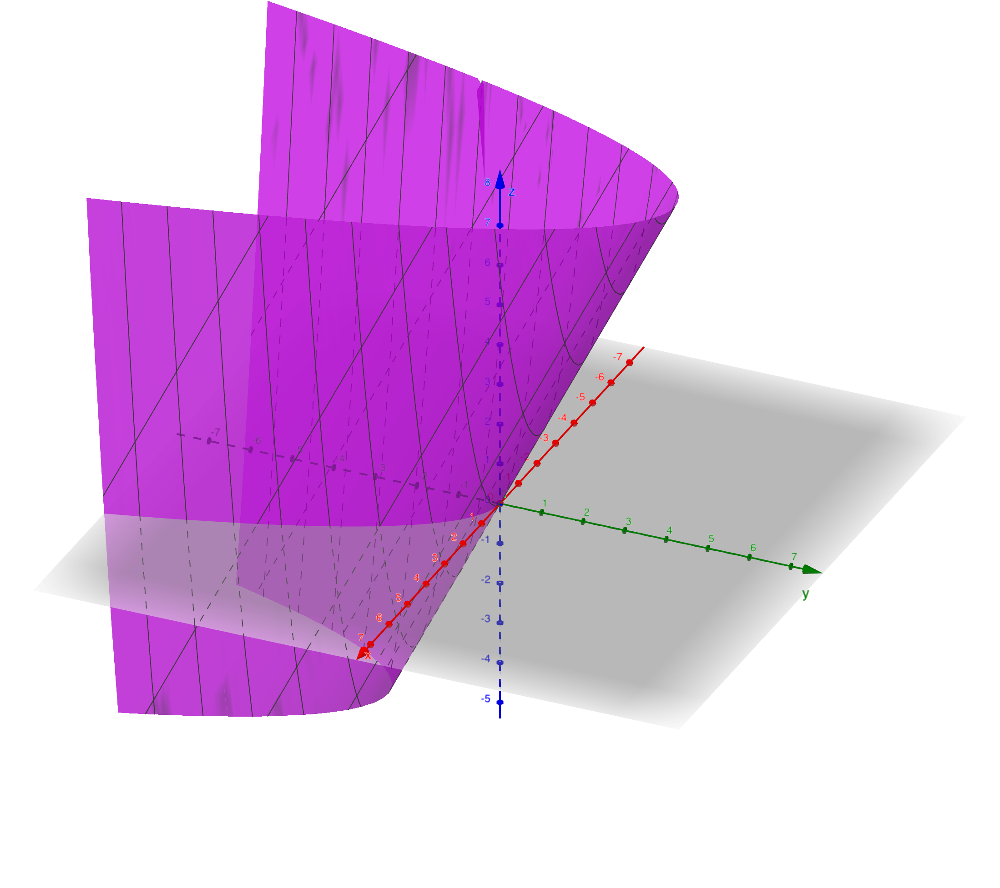
El cuarto y último tema versa sobre sucesiones y series de números reales (la suma de una sucesión de números). Concretamente, se centra en el estudio de series y geométricas y en el análisis de la convergencia de las series. Esto último es especialmente interesante ya que permite comprobar cómo la suma de infinitos números puede dar como resultado otro número y no infinito, como por ejemplo:
\[ \sum_{n=1}^{\infty} \frac{1}{n^2} = \frac{1}{1} + \frac{1}{4} + \frac{1}{9} + \ldots = \frac{\pi^2}{6} \]
Esta es una asignatura que depende mucho del profesor que te toque. En nuestro caso tuvimos muchísima suerte y nos tocó el mejor profesor del curso. Además de explicar muy bien y de realizar muy buenos vídeos, se notaba que tenía una enorme pasión por las matemáticas y traba de transmitírnosla a nosotros. De hecho, gracias a él conseguí llegar a un 9 sin necesidad de acudir a ninguna academia.
Sin embargo, no puedo decir lo mismo de la parte práctica. Las sesiones de laboratorio, donde nos daba otro profesor completamente distinto al de teoría, consistían en la resolución de problemas de la asignatura por medio del programa WxMaxima, que deseo de todo corazón que no tengáis que usarlo nunca.
Segundo semestre
Comenzamos ahora con el segundo semestre, donde las cosas comienzan a complicarse un poco.
Cálculo II
Esta asignatura es la continuación directa de Cálculo I y, si decía que no había integrales en la precuela, esta asignatura es casi exclusivamente integrales.
La primera parte de la asignatura consiste en un repaso de integrales de funciones de una sola variable de bachillerato, todo según la definición de integral de Riemann. Si bien es cierto que ampliamos un poco los conceptos con algunas fórmulas para calcular logitudes y áreas y volúmenes de cuerpos de revolución, además de algunas cuestiones teóricas como el teorema fundamental del cálculo.
A partir de aquí la asignatura empieza a dar un poco de miedo pues empezamos con las integrales de funciones de varias variables, que son muchísimo más complicadas. Un ejemplo de integral múltiple es el siguiente, con \(f(x, y) = c\):
\[ \begin{split} \iint_{D = \{ (x, y) \in \mathbb{R}^2 : 2 \leq x \leq 4; 3 \leq y \leq 6 \}} c \, dA = \int_3^6 \int_2^4 c \, dxdy \\ = c \int_3^6 \int_2^4 dxdy \\ = c·A(D) \\ = c (3 · 2) = 6c \end{split} \]
Además, también se estudió una pequeña introducción a la integral de Lebesgue, que es una extensión de la integral de Riemann que resuelve casos en los que no es válida la definición de Riemann.
El último tema versaba sobre el Desarrollo en Serie de Fourier (DSF). El objetivo es aproximar una función periódica por una suma de funciónes seno y coseno. Un ejemplo se puede ver en la Figura 4.
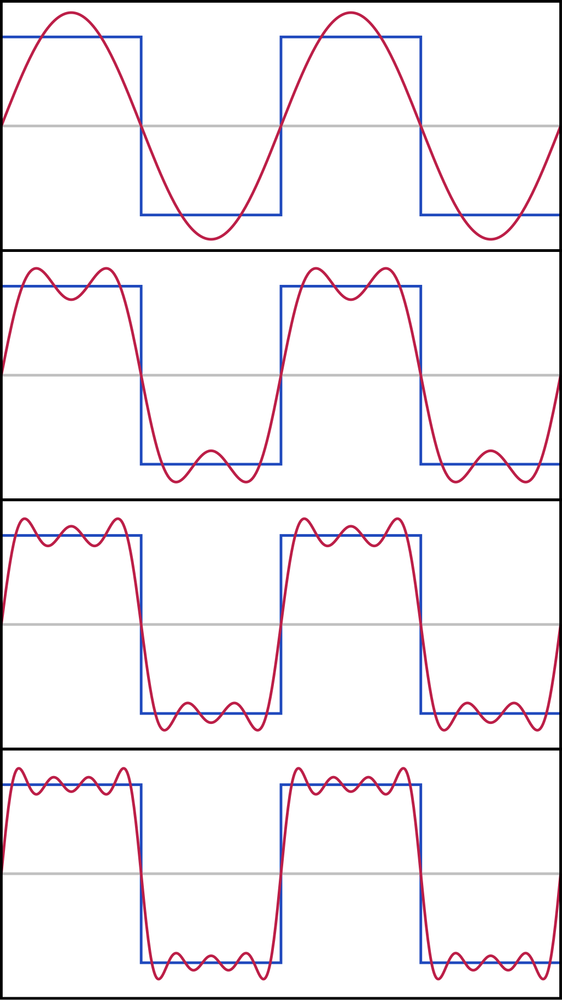
En la parte práctica de la asignatura se trabajaron los conceptos de métodos numéricos de integración con ayuda de MatLab.
La asignatura es bastante más complicada que Cálculo I, y eso que por diversas circunstancias quedó bastante contenido sin dar. El primer parcial lo llevaba bastante bien, pero el examen fué bastante complicado y saqué un 4.5.
El segundo parcial, el que tiene integrales múltiples, daba un montón de miedo, por lo que me apunté a una academia. Aún con esto estuve el día anterior estudiando con unas compañeras agobiándonos porque no íbamos a llegar ni al 3 para que nos diera la media. Sin embargo, en el examen saqué un notable, que junto a las prácticas de aula y de laboratorio quedó en un 8.1 de nota final. No me preguntéis cómo.
Computadores
El objetivo fundamental de esta asignatura es ver cómo funciona más o menos un ordenador según la arquitectura Von Neumann (la de los ordenadores habituales) por dentro.
Para ello, se empieza con la parte más básica de la informática, viendo cómo se codifica la información (números naturales, enteros, reales, caracteres, etc.) en el sistema binario, es decir, como secuencias de 0’s y 1’s. Paralelamente, en el laboratorio se comienza con una pequeña introducción a C/C++, viendo cómo los valores de las variables se codifican en binario con el depurador (Figura 5).
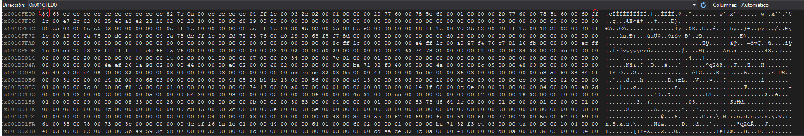
El siguiente paso es construir los diferentes sistemas y circuitos digitales que operan con 0’s y 1’s (puertas lógicas, sumadores, Unidades Aritmética Lógicas (ALUs)) y que son esenciales a la hora de poder construir un computador. Durante las sesiones prácticas se ha trabajado con un simulador de circuitos digitales (Figura 6).
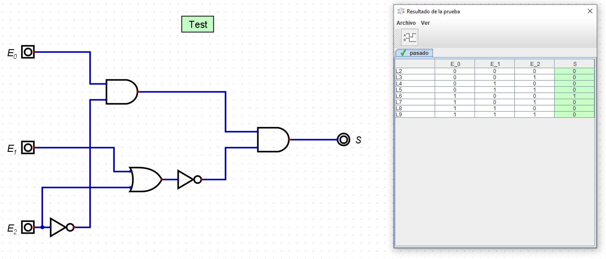
Una vez adquiridas estas bases, procedimos a estudiar un computador “de juguete” diseñado con fines puramente didácticos3. Lo primero ha sido estudiar el lenguaje ensamblador de esta máquina.
3 Que nadie piense que en esta asignatura va a comprender de arriba a abajo cómo funciona un ordenador. Los computadores actuales son extremadamente complejos.
Por si alguien no sabe lo que es, es básicamente el lenguaje de programación que está inmediatamente por encima del binario, y son cada una de las instrucciones más básicas que puede realizar un computador (mover un dato de un registro a otro, sumar los datos de dos registros y guardarlos en otro, leer un dato de la memoria RAM y guardarlo en un registro, etc.). Normalmente no es necesario trabajar directamente con él, sino que se programa en un lenguaje de alto nivel (como C) y luego un compilador convierte el programa a ensamblador y después a binario, que es lo que entiende la máquina. Nuestra tarea era básicamente realizar el papel del compilador y convertir programas como el del Listado 1 en código como el del Listado 2.
for (int i = 0; i < 100, i++) {
a = a - i;
}a se almacena en el registro R5 e i en R0.
xor r0, r0, r0
movh r1, 01
movl r1, 00
for:
cmp r0, r1
brnc fin_for
sub r5, r5 r0
inc r0
jmp for
fin_for:A continuación, nos dispusimos a estudiar en detalle los distintos componente de este computador:
- Procesador: Vimos en detalle cómo se ejecutan las instrucciones en el procesador.
- Memoria (RAM): Vimos cómo se guardan los datos en memoria y cómo se mapea esta.
- Sistema de Entrada/Salida: Esto no dió tiempo a verlo, pero es básicamente cómo introducir datos en el computador, por ejemplo por teclado, y cómo sacar datos al exterior, por ejemplo mostrándolos por pantalla.
Para todo esto, dispusimos de un simulador de dicho computador, que se puede ver en la Figura 7.
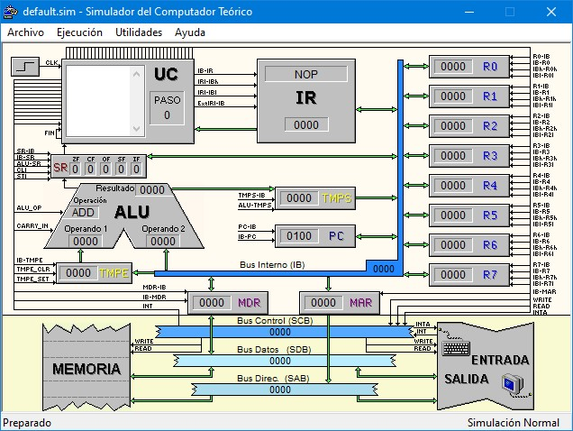
El siguiente tema es una introducción a los sistemas operativos. Vimos un poco su papel en un computador, cómo se gestionan y planifican los procesos (programas en ejecución) e hilos, cómo se gestiona la memoria, los sistemas de archivos y los ficheros. También aprendimos algunos comandos básico de Windows y cómo crear máquinas virtuales.
Finalmente, hubo un último tema acerca de la medición del rendimiento de computadores.
Esta asignatura aunque tiene su dificultad, a poco que te interesen los ordenadores se hace bastante llevadera. Al final acabé con un notable de nota media.
Bases de datos
Obviamente en un grado sobre ciencia e ingeniería de datos no podía faltar una asignatura acerca de bases de datos.
El objeto de estudio principal de esta asignatura es el modelado de bases de datos según el modelo Entidad/Relación, donde realizábamos diagramas explicando la forma en la que se iban a modelar los datos (Figura 8 (a)), indicando las diferentes entidades y atributos que se van a guardar, y las relaciones entre las distintas entidades. Una vez creado el diagrama, vimos cómo crear las tablas necesarias en las que se van a almacenar los datos (Figura 8 (b)).
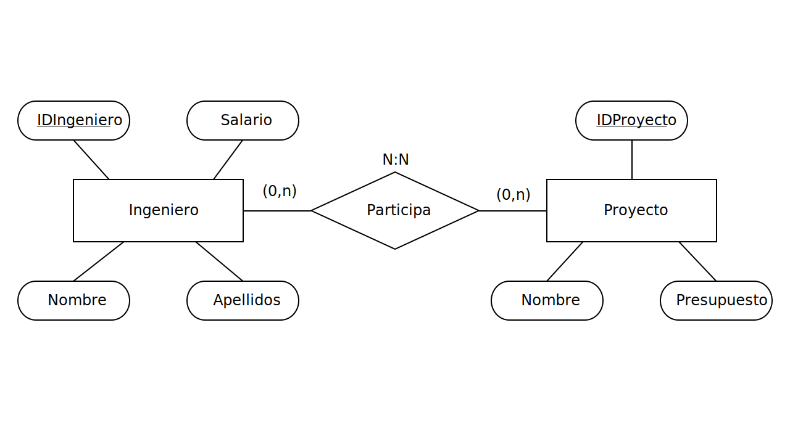
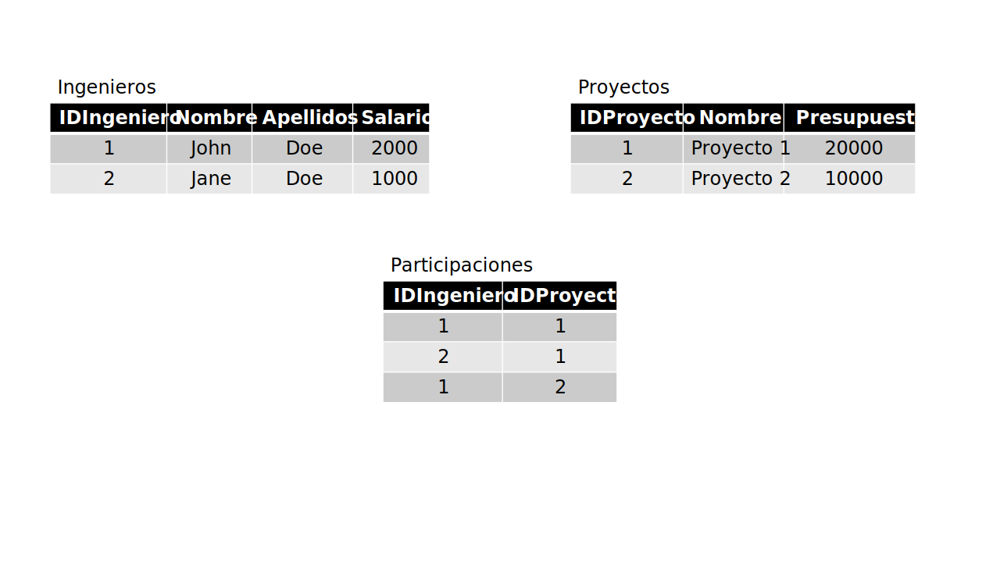
El siguiente tema fue sobre normalización de bases de datos relacionales. No puedo contar mucho sobre ello porque lo único que se nos explicó fueron los pasos para realizar los ejercicios de clase, por lo que no he entendido prácticamente nada.
Como novedad exclusiva en nuestro grado, se añadieron unos últimos temas exclusivos para nosotros acerca de bases de datos no relacionales (clave-valor, orientadas a documentos, columnares y basadas en grafos), sobre almacenes de datos y modelado multidimensional, y sobre gestión de transacciones concurrentes en una base de datos. De estos dos últimos temas simplemente fue entregar unos ejercicios.
Durante las sesiones prácticas, estuvimos trabajando con una base de datos de Oracle que tenían las profesoras montada en un servidor de la universidad con el entrono SQLDeveloper, donde todo fallaba más que una escopeta de feria. En primer lugar, como no podía ser de otra manera, aprendimos el lenguaje SQL para la crear, insertar, modificar, eliminar o consultar tablas. Lo más importante fue la parte de consultas, dónde básicamente nos daban una descripción de qué datos se querían obtener (por ejemplo, “obtener el nombre, los apellidos y el salario de todos los empleados del departamento de ventas”) y teníamos que escribir la sentencia de SQL para obtener dichos datos (ver Listado 3).
SELECT
nombre,
apellidos,
salario
FROM
empleados
WHERE
departamento = "ventas";A continuación, dimos PL/SQL. Este es un lenguaje exclusivo de las bases de datos de Oracle que es básicamente una extensión de SQL que le añade características propias de un lenguaje de programación habitual (variables, bucles, funciones, etc.). Véase un ejemplo en el Listado 4.
CREATE OR REPLACE FUNCTION calcular_salario_anual(p_id_empleado IN empleados.id%TYPE)
RETURN NUMBER
IS
v_salario_mensual empleados.salario%TYPE;
v_salario_anual NUMBER;
BEGIN
-- Obtener el salario mensual del empleado
SELECT salario
INTO v_salario_mensual
FROM empleados
WHERE id = p_id_empleado;
-- Calcular el salario anual
v_salario_anual := v_salario_mensual * 12;
-- Devolver el salario anual
RETURN v_salario_anual;
END;Para ilustrar la parte de bases de datos no relacionales (NoSQL), dimos un poco de MongoDB. Se trata de una base de datos que en vez de almacenar los datos en tablas, lo que hace es guardarlos como documentos JSON.
db.empleados.insertOne({
nombre: "Juan Pérez",
departamento: "ventas",
salario: 3000,
direccion: {
calle: "Calle Falsa 123",
ciudad: "Madrid",
codigo_postal: "28001"
},
proyectos: [
{ nombre: "Proyecto A", duracion_meses: 6 },
{ nombre: "Proyecto B", duracion_meses: 12 }
]
})
db.empleados.find({ departamento: "ventas" })También, las profesoras se empeñaron en dar un poco de JDBC, que es básicamente una API para conectar aplicaciones Java con una base de datos, a pesar de no haber visto Java en la carrera. Sin embargo no se evaluó.
Esta materia no tendría que haber sido especialmente difícil. Sin embargo, como pasa en muchas asignatura de la universidad, los profesores insisten en hacerla más complicada de manera puramente artificial. Esto se debe a que para aprobar la asignatura, había que sacar mínimo un 5 en cada tema, tanto de teoría como de prácticas. En caso de suspender alguno de los temas, era necesario acudir a la convocatoria extraordinaria a recuperar dicha parte o partes.
Los temas no eran especialmente difíciles, a excepción del de PL/SQL. Para empezar, el examen se hizo sobre la misma base de datos que utilizamos para el examen de consultas de SQL. Sin embargo, a diferencia del anterior, en este no tuvimos el diagrama Entidad/Relación de la base de datos, por lo que no sabíamos qué información había en esta ni cómo estaba organizada (había que mirarla cuidadosamente tabla por tabla), es decir, que íbamos a ciegas. A esto hay que sumarle la sintaxis propia del siglo XX que tiene PL/SQL, donde para hacer cualquier cosa hay que escribir una buena parrafada. Además, el SQLDeveloper no tiene apenas autocompletado, ni siquiera para los nombres de las columnas, que eran bastante largos e inconsistentes. En consecuencia, más de la mitad de la clase suspendió este examen, por lo que tuvieron que acudir a la recuperación de junio (en algunos casos incluso pagar segunda matrícula).
Afortunadamente logré aprobar esa parte por los pelos y acabé con un notable de nota final, pero para que veáis cómo se las trae a veces la universidad.
Algoritmia
Vamos ahora con una de las asignaturas más chungas del semestre. En nuestro caso fue especialmente complicada pues los profesores asumían que teníamos un nivel alto de programación, limitándose simplemente a explicar los conceptos de Algoritmia. Para ponernos en contexto, en Informática esta materia se estudia en el segundo curso después de haber tenido tres asignaturas de programación. Sin embargo, nosotros sólo tuvimos una y, tal y como comenté, fue bastante problemática. Tampoco ayudaba el hecho de que las prácticas nos daban un enunciado abandonándonos a nuestra suerte y teníamos que entregar una solución al final de la clase4.
4 Al final, como en algunas sesiones ya sabíamos lo que íbamos a hacer, llevábamos las prácticas ya hechas de clase particular.
La asignatura comienza con la parte de análisis de algoritmos que no nos dió tiempo a dar en la asignatura de discreta. Básicamente nos daban un algoritmo en pseudocódigo (una descripción de un algoritmo en algo a medio camino entre un lenguaje de pogramación y el lenguaje natural, ver ejemplo del Listado 6) y teníamos que analizar su eficiencia de forma teórica con las notaciones asintóticas (\(O(n)\), \(O(n^2)\), \(\Theta(n)\), \(\Omega(1)\), \(O(\log(n))\), \(O(n\log(n))\), ver Figura 9).
Función Sumar(V[1..n]: vector de enteros) retorna (resultado: entero)
res = 0
Para i desde 1 hasta n hacer
res = res + V[i]
fpara
retorna res
ffunción
El segundo tema trata sobre el diseño y análisis de algoritmos recursivos. La idea es la misma que en las ecuaciones recurrentes que dimos en Álgebra Lineal. De hecho, la sucesión de Fibonacci que comentamos es un ejemplo de definición recursiva, pues:
\[ \text{Fibonacci}(n) = \begin{cases} 0 & \text{si} \quad n = 0 \\ 1 & \text{si} \quad n = 1 \\ \text{Fibonacci}(n - 1) + Fibonacci(n - 2) & \text{si} \quad n > 1 \end{cases} \]
Se dice que es recursiva porque un algoritmo que calcule \(\text{Fibonacci}(5)\) debe volver a llamarse a sí mismo para calcular \(\text{Fibonacci}(4)\) y \(\text{Fibonacci}(3)\) y luego sumar ambos resultados. Sin embargo, el algoritmo de \(\text{Fibonacci(4)}\) debe volver a llamarse a así mismo para calcular \(\text{Fibonacci(2)}\) y \(\text{Fibonacci(3)}\) y sumarlos, y con \(\text{Fibonacci(3)}\) pasaría exactamente lo mismo. Esto podría seguir así hasta el infinto. En la práctica, siempre se llega a un caso base en el que la solución es trivial. Estos son \(\text{Fibonacci(0)}\) y \(\text{Fibonacci(1)}\). Una vez se llega a ellos, sólo hay que combinar los resultados de todas las llamadas recursivas para dar la solución final. Esto se puede visualizar en la Figura 10 y, de forma más humorística, en la Figura 11.
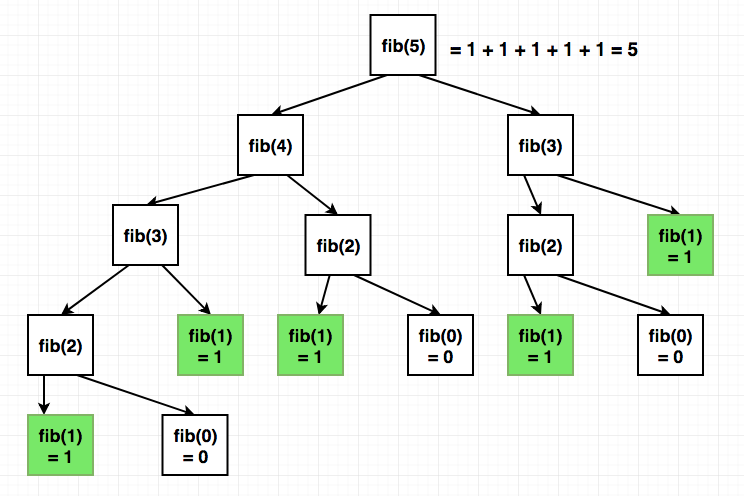
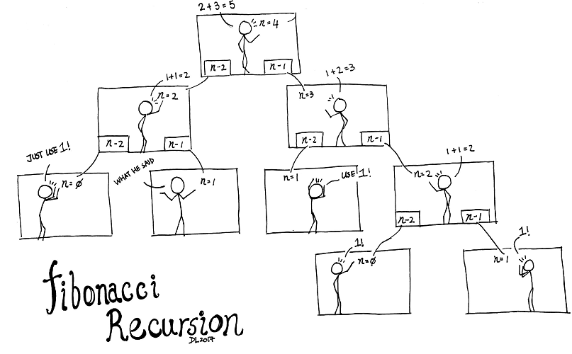
La recursividad es un concepto que cuesta bastante entenderlo al principio. De hecho, de forma humorística se suele decir que “para entender la recursividad hay que entender la recursividad”. Sin embargo, una vez lo pillas ves que todo es muy sencillo prácticamente quieres hacerlo todo con recursividad.
Otro ejemplo para visualizar esta idea se muestra en la Figura 12.
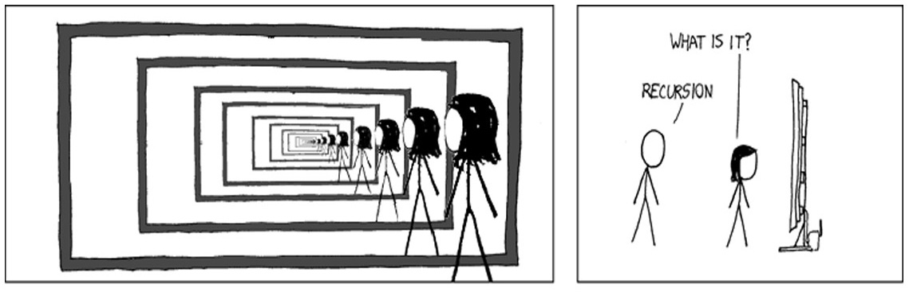
El siguente tema es el esquema algorítmico de divide y vencerás, cuyo razonamiento es similar al recursivo. El objetivo es descomponer un problema grande en varios subproblemas más pequeños, más sencillos de resolver, y repetir este proceso de forma sucesiva hasta que la resolución de los subproblemas sea trivial, para después combinar las soluciones de dichos subproblemas para dar la solución al problema original.
Un ejemplo de algoritmo de divide y vencerás es merge sort para ordenar listas de números. Para ello, se divide la lista en dos mitades. A continuación, cada una de las mitades se vuelven a dividir otra vez en dos mitades. Este paso se reptie hasta que nos queden los números por separado. A continuación, procedemos a combinar estos números en grupos de dos poniendo primero el menor número y luego el más grande. Estos grupos se van combinando hasta que nos da la lista de números completamente ordenada. Este proceso lo podemos ver en la Figura 13.

A partir de aquí, la asignatura se centra en la resulción de problemas de optimización. Pero no en el sentido de los problemas de optimización que se ven en la asignatura de Cálculo I, que se resueven con derivadas. Se trata de problemas de optimización combinatoria o “discreta” donde en su lugar se diseña un algoritmo que lo resuelve.

Un ejemplo sería el problema de la mochila (Figura 14), donde hay una serie de objetos, donde cada uno aporta un determinado beneficio, y hay que llenar una mochila con objetos de forma que se maximice el beneficio total de todos los objetos introducidos. Además, son problemas en los que hay que cumplir con una serie de restricciones, como que el peso de los objetos seleccionados no debe sobrepasar la capacidad de la mochila.
Para resolver estos problemas, lo primero que se hace es ver a qué problema de los problemas modelo que hemos visto en clase se parecen, y resolverlo con alguno de los siguientes esquemas algorítmicos: programación dinámica, backtracking, algoritmos voraces y ramifica y poda (este último esquema no nos dio tiempo a darlo).
¿Cómo me fue con esta asignatura? Pues bueno, saqué un 9 y conseguí una matricula de honor sin haber sido capaz de hacer funcionar ni un solo algoritmo de los tres últimos temas. No me preguntéis cómo.
En el segundo examen de prácticas simplemente cambié los datos de un ejemplo de la academia por los del enunciado del examen, y lo entregé sin que funcionara, sacando un 8.9. Y en el examen de teoría esa parte simplemente me la memoricé y la vomité.
Probabilidad
Para acabar, vamos con la peor asignatura del curso. Según el profesor esta iba a ser una asignatura apasionante. No sé qué definición vio él de la palabra apasionante pero es un verdadero infierno.
Veamos en qué consiste. En el primer tema se estudian conceptos básicos de probabilidad frecuentista (espacio muestral, sucesos, probabilidades de sucesos, probablidades negadas, probablidad de la unión/intersección de sucesos, sucesos dependientes/independientes, probabilidad total, probabilidad condicionada, teorema de Bayes, etc.). Para ver un ejemplo de esto, imáginemos que lanzamos dos monedas al aire. Los posibles resutlados que nos pueden salir, lo que se llama espacio muestral, son los siguientes (\(\text{c}\) significa cara y \(\text{x}\) cruz): \(\Omega = \{\text{cc}, \text{cx}, \text{xc}, \text{xx}\}\). Podemos calcular la probablidad de sucesos como “sólo sale una cara” de la siguiente manera5:
5 Como no pueden ocurrir a la vez \(\text{xc}\) y \(\text{xc}\), entonces \(P(\text{cx} \cup \text{xc}) = 0\)
\[ \begin{split} P(\text{Sólo sale una cara}) = P(\text{cx} \cup \text{xc}) = \\ P(\text{cx}) + P(\text{xc}) - P(\text{cx} \cup \text{xc}) = 0.25 + 0.25 + 0 = 0.5 \end{split} \]
El segundo tema es sobre variables aleatorias. Es básicamente una forma más sencilla de trabajar en probabilidad que con sucesos. Esto se entiende mejor con un ejemplo. Supongamos ahora que queremos calcular la probablidiad de que salga un determinado número de caras. Para ello, definiremos una variable aleatoria \(X \equiv \text{Número de caras que salen en los dos lanzamientos}\). Esta variable puede tomar los siguientes valores:
\[ X = \begin{cases} 0 & \text{si sale cc} \\ 1 & \text{si sale cx o xc} \\ 2 & \text{si sale xx} \end{cases} \]
Para calcular probablidades, se tiene una función de probablidad:
\[ p_X(x) = \begin{cases} 0.25 & \text{si} \quad x = 0 \\ 0.5 & \text{si} \quad x = 1 \\ 0.25 & \text{si} \quad x = 2 \\ 0 & \text{en otro caso} \end{cases} \]
Por tanto, si queremos calcular la probablidad de que nos salga una sola cara:
\[ P(X = 1) = p_X(1) = 0.5 \]
Este es un caso de variable aleatoria discreta. Se estudian también variables aleatorias continuas y mixtas. De todas ellas se dan conceptos como funciones de probablidad, de densidad, de distribución acumulada, medidas de posición (esperanza, mediana, etc.) y dispersión de variables aleatorias (varianza, desviación típica, etc.), momentos, cambios de variable, entre otros.
El tercer tema trata sobre las principales distribuciones de probabilidad, que son por así decirlo variables aleatorias “con nombre propio” para casos habituales. Esto también se entiende mejor con un ejemplo. Continuando con el ejemplo de las monedas, dado que queremos contar el número de veces que sale cara en dos lanzamientos, con una probablidad de 0.5 de que salga cara en uno de ellos, decimos que la variable \(X\) sigue una distribución \(X \sim \text{Binomial(n = 2, p = 0.5)}\), por lo que para calcular la probablidad de que salga exactamente una cara se utiliza la fórmula de función de probablidad de la binomial simplemente sustituyendo \(n\) y \(p\):
\[ \begin{split} P(X = 1) = \binom{n}{1} p^1 (1 - p)^{n - 1} = \binom{2}{1} 0.5^1 (1 - 0.5)^{2 - 1} \\ = \frac{2!}{1!1!} · 0.5 · 0.5 = 2 · 0.5 · 0.5 = 0.5 \end{split} \]
Se dan las principales distribuciones discretas (Uniforme Discreta, Bernoulli, Binomial, Poisson, Geométrica, Hipergeométrica y Binomial negativa) y continuas (Uniforme continua, Normal, Exponencial, Gamma y Weibull), además de las relaciones que hay entre ellas.
La distribución más importante de todas es sin lugar a duda la distribución \(\text{Normal}(\mu, \sigma)\). Esta es la famosa campana de Gauss (ver Figura 15). En ella la mayoría de los valores tienden a concentrarse alrededor de la media. Un ejemplo de datos que siguen esta distribución es la estatura, ya que la mayoría de las personas suelen tener una estatura similar a la promedio, habiendo muy pocas personas muy bajas o muy altas.
Esta es con diferencia la distribución que más suele aparecer. Además, exite lo que se conoce como el Teorema Central del Límite que permite, bajo ciertas circunstancias, aproximar otras distribuciones por una normal.

El cuarto tema trata sobre vectores aleatorios. Básicamente son vectores compuestos por varias variables aleatorias, es decir, del estilo \(\mathbf{X} = (X_1, X_2, \ldots, X_n)\), por lo que el tema consiste en ver lo mismo pero con varias variables.
Tendría que haber habido un último tema de procesos estocásticos, pero no dió tiempo.
Durante las sesiones prácticas dimos una pequeña introducción al lenguaje de programación R con el entrono RStudio para hacer pequeñas simultaciones. Un ejemplo se puede ver en el Listado 7.
# EJERCICIO 3:
# Apartado a:
pnorm(1.8, 1.7, .2, lower.tail = FALSE)
# Apartado b:
qnorm(.1, 1.7, .2, lower.tail = FALSE)
# Apartado c:
set.seed(2)
muestraY <- rnorm(1000, 1.7, .2)^2
message("Desviación típica de los datos: ", sd(muestraY))
plot(ecdf(muestraY))La asignatura en general era bastante difícil llervala al día (sólo había un único examen final de teoría y otro de laboratorio), y encima tardé bastante en apuntarme a una academia por lo que ya iban bastante avanzados, lo que hizo que se me hiciera bastante cuesta arriba.
A todo esto hay que sumarle todo el tiempo que perdí con un trabajo que nos mandó sobre independencia condicionada. Básicamente el único material que había en internet era o una explicación básica con dibujitos o trabajos de nivel de máster. Por tanto, salió lo que salió y cuando el profesor corrigió tres trabajos decidió dejar de leerlos y poner un suspenso global. A los que dimos la explicación sencilla nos puso un 3 y a los que copiaron lo de nivel de máster les puso un 0. Esto también causó que se cancelara el trabajo del Tema 5 de procesaos estocásticos que en principio estaba planeado.
Los tres primeros temas de la asignatura son hasta cierto punto asequibles. El problema está en el Tema 4, pues la cosa se complica cuando aparecen varias variables (por ejemplo, las integrales que se ven en temas anteriores pasan a ser integrales múltiples, y eran aún peores que las que dábamos en Cálculo II), además de que el profesor no hacía otra cosa que subir PDFs con más apuntes y teoremas en plena época de exámenes.
Dado que los tres primeros temas están contenidos en el cuarto, al profesor le parecía buena idea simplemente hacer un examen sólo con preguntas del Tema 4, cosa que era completamente inviable, por lo que intentamos convencerle de que no fuera así.
El problema está en que habíamos copiado todos los cuestionarios que ponía, y en el cuestionario del Tema 4 la nota media era un 9 y nadie le había preguntado ninguna duda. Por tanto iba a diseñar un examen en consecuencia.
Finalmente, el exámen teórico fueron 6 puntos del Tema 4 y los otros 4 puntos de preguntas cortas del resto. Como era de esperar el examen fue una hecatombe. Lo único bueno es que no había que sacar una nota mínima para que te haga media por lo que iba con la tranquilidad de que había sacado un 9.4 en el examen de laboratorio, por lo que, sumadas las demás calificaciones, sólo necesitaba poco más de un 2 en el examen de teoría para aprobar. Y así fue. Cuando subió las calificaciones, sólo estaba la nota final de la asginatura y saqué un 5 raspado, que estoy convencido de que fue un 4 con algo que me lo subió por pena.
Conclusiones
Con esto concluye este vistazo a primero de Ciencia e Ingeniería de Datos. Espero no haberos asustado (demasiado) y os animo a que consideréis esta titulación pues tiene una gran demanda en el mercado.
Sí que es cierto que se la primera promoción tiene su precio, muchos profesores tuvieron que preparar la asignatura sobre la marcha y se notan un montón las deficiencias en cómo están estructurados los contenidos del grado.
Para acabar, me gustaría desahograme un poco de la modalidad semipresencial de esta carrera pues, aunque lo vendían como un punto a favor, en realidad lo hicieron porque les salía más barato. Lo que muchos esperábamos era tener todas las clases concentradas en dos o tres días a la semana en vez de ir dos, tres o algunas veces incluso una sóla hora todos los día, todo para que nos lean unas diapositivas. Esto es especialmente pesado sobre todo para los que depenedemos del transporte público pues hay gente que invertía más tiempo en el propio desplazamiento que la clase en sí. Encima en muchas asignaturas la asistencia contaba entre 0.5 o un punto la asistencia.
En breve mi intención es publicar un nuevo artículo con las asignaturas de segundo, que es cuando nos adentramos de lleno en el arte del data science.